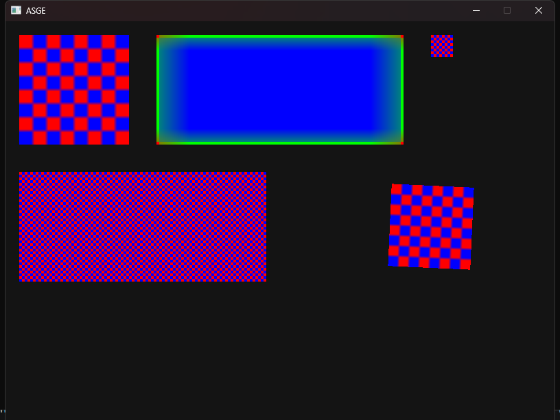

← All examples
Rendering · Assets
Textures
Loading and drawing images
Loads a checker-pattern texture and a frame texture from disk through the asset pipeline, then draws them with IRenderer::DrawTexture and DrawTextureAffine — the latter continuously rotated to demonstrate affine (rotated/scaled) texture drawing rather than plain axis-aligned blits.
No input — purely a visual reference for this subsystem.

Run it yourself
build just this example
cmake --build --preset windows-debug --target texture_demo
# binary lands under bin/ (e.g. bin/Debug/texture_demo.exe on Windows)See Installation for the full build setup.
Source
examples/texture_demo/Game.hpp
#pragma once
#include <ASGE/ASGE.hpp>
class TextureDemoState final : public asge::game::state::IGameState<int>
{
std::unique_ptr<asge::video::ITexture> m_CheckerTexture; // Lazily created on first Render
std::unique_ptr<asge::video::ITexture> m_FrameTexture;
float m_RotationAngle{0.0f}; // Drives the DrawTextureAffine demo
void EnsureTexturesLoaded(asge::video::IRenderer& inRenderer);
public:
[[nodiscard]] std::optional<asge::game::state::Transition<int>>
Update(float inDeltaTime, asge::input::InputState const& inInput) override;
void Render(asge::video::IRenderer& inRenderer) override;
void OnSystemEvent(asge::event::SystemEvent const& inSysEvent) override;
};
class TextureDemoGame final : public asge::game::Game<int>
{
public:
explicit TextureDemoGame(asge::video::IRenderer& inRenderer, asge::audio::AudioDevice& inAudioDev);
protected:
[[nodiscard]] std::unique_ptr<StateType> CreateState(int inId) override;
};
examples/texture_demo/Game.cpp
#include "Game.hpp"
#include <cmath>
#include <filesystem>
namespace
{
constexpr float ROTATION_SPEED = 1.2f; // radians per second, for the DrawTextureAffine demo
constexpr float AFFINE_SIZE = 120.0f;
const asge::math::Float2 AFFINE_CENTER{ 620.0f, 300.0f };
asge::math::Float2 Rotate(asge::math::Float2 const& inVec, float inAngle)
{
float const c = std::cos(inAngle);
float const s = std::sin(inAngle);
return { inVec.x() * c - inVec.y() * s, inVec.x() * s + inVec.y() * c };
}
std::unique_ptr<asge::video::ITexture> LoadTexture(
asge::video::IRenderer& inRenderer, char const* inFileName)
{
// ASGE_TEXTURE_DEMO_ASSET_DIR is injected by CMakeLists.txt.
auto const path = std::filesystem::path(ASGE_TEXTURE_DEMO_ASSET_DIR) / inFileName;
auto imageResult = asge::media::Image::Load(path);
if (!imageResult)
{
imageResult.LogError();
return nullptr;
}
return inRenderer.CreateTexture(imageResult.Value());
}
}
void TextureDemoState::EnsureTexturesLoaded(asge::video::IRenderer& inRenderer)
{
if (!m_CheckerTexture) m_CheckerTexture = LoadTexture(inRenderer, "checker.bmp");
if (!m_FrameTexture) m_FrameTexture = LoadTexture(inRenderer, "frame.bmp");
}
std::optional<asge::game::state::Transition<int>>
TextureDemoState::Update(float inDeltaTime, [[maybe_unused]] asge::input::InputState const& inInput)
{
m_RotationAngle += ROTATION_SPEED * inDeltaTime;
return std::nullopt;
}
void TextureDemoState::Render(asge::video::IRenderer &inRenderer)
{
inRenderer.Clear({ 20, 20, 20, 255 });
EnsureTexturesLoaded(inRenderer);
if (m_CheckerTexture)
{
// DrawTexture(Rect): scaled into a destination rectangle
inRenderer.DrawTexture(*m_CheckerTexture, asge::math::Rect{ 20.0f, 20.0f, 160.0f, 160.0f });
// DrawTexture(Position): drawn at native size, no scaling
inRenderer.DrawTexture(*m_CheckerTexture, asge::math::Float2{ 620.0f, 20.0f });
// DrawTextureTiled: repeated like wallpaper to fill the destination rect
inRenderer.DrawTextureTiled(
*m_CheckerTexture, 1.0f, asge::math::Rect{ 20.0f, 220.0f, 360.0f, 160.0f });
// DrawTextureAffine: rotates the texture around AFFINE_CENTER
float const half = AFFINE_SIZE / 2.0f;
asge::math::Float2 origin = AFFINE_CENTER + Rotate({ -half, -half }, m_RotationAngle);
asge::math::Float2 right = AFFINE_CENTER + Rotate({ half, -half }, m_RotationAngle);
asge::math::Float2 down = AFFINE_CENTER + Rotate({ -half, half }, m_RotationAngle);
inRenderer.DrawTextureAffine(*m_CheckerTexture, origin, right, down);
}
if (m_FrameTexture)
{
// DrawTexture9Grid: corners stay crisp, edges stretch, center fills --
// frame.bmp's 4px border on all sides matches these margins.
inRenderer.DrawTexture9Grid(
*m_FrameTexture, 4.0f, 4.0f, 4.0f, 4.0f,
asge::math::Rect{ 220.0f, 20.0f, 360.0f, 160.0f });
}
}
void TextureDemoState::OnSystemEvent([[maybe_unused]] asge::event::SystemEvent const &inSysEvent)
{
}
TextureDemoGame::TextureDemoGame(asge::video::IRenderer& inRenderer, asge::audio::AudioDevice& inAudioDev)
: Game(inRenderer, inAudioDev)
{
SetInitialState(0);
}
std::unique_ptr<TextureDemoGame::StateType> TextureDemoGame::CreateState([[maybe_unused]] int inId)
{
return std::make_unique<TextureDemoState>();
}